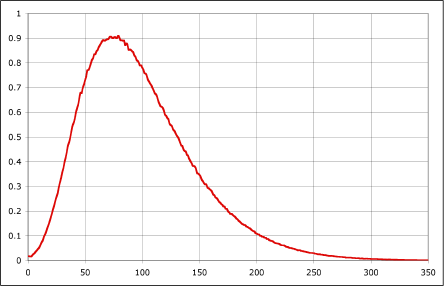
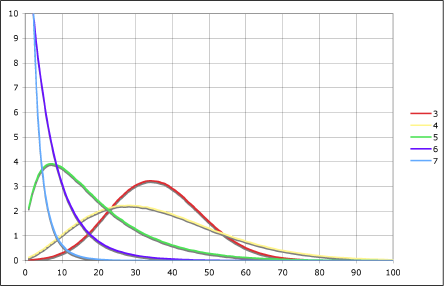

02.20.07
Posted in politics at 1:13 am by danvk
Part two of Frontline’s News War is on at nine tonight. I’ve never fully understood the Valerie Plame business or the Scooter Libby trial that’s going on right now, but I have a feeling this is going to be the show that makes me get it. You can watch part one online here.
Permalink
02.16.07
Posted in boggle, programming at 12:07 am by danvk
I got curious about the programming language D after noticing it outperform C++ in the somewhat-silly Computer Language Shootout and reading Steve Yegge’s thoughts on it. I’ve played around it for the past few days. Here’s some thoughts.
First of all, D is what you might call a “low PageRank language.” If you search for ‘D’, there’s nothing related to the language until result #15. The next result isn’t until #160, and it’s pretty random. Contrast that with C. This makes searching for help on D almost impossible. Try “D slow file I/O” for a taste. This isn’t necessarily Google’s fault, either. There’s just not that many good D resources online yet.
Read the rest of this entry »
Permalink
02.15.07
Posted in personal, politics at 10:17 pm by danvk
I enjoyed listening to some of NPR’s Intelligence Squared program on the way home from work, “Is America Too Damn Religious?” A gem from the first speaker, Rev. Barry W. Lynn:
After every major school shooting in the United States, members of Congress insist that, if we posted the ten commandments on every schoolroom wall, we would stop the next violent student uprising from occurring. They’re never willing to talk about gun control, they’re never willing to even talk about spending money to work with avariced young people but decalogue display is the panacea. But you know, if proximity to holy words really made us better people then the presence of Giddeon Bibles in night-stands in motels would have ended adultery long ago but it has not, it is not that simple.
Full program here.
Permalink
02.12.07
Posted in personal at 11:07 pm by danvk
Google’s semi-famous annual ski trip was this past week at Squaw Valley, near Tahoe. Being a midwesterner, I’m still not totally used to this whole “mountain” concept. I checked the weather the night before the trip, and saw that it’d be a high of 45 in Tahoe that day. So warm! Would I even need a coat? Apparently it never occurred to me that weather conditions on the top of a mountain might be different than on the bottom.
Needless to say, I was woefully underprepared. No gloves, no earmuffs, no hat, no ski goggles, etc. So this is what it looks like at the top:

Or rather, that’s what it looked like later. There was a blistering snow storm at first. Run #1 down the bunny slope was the scariest thing I’ve ever done. I had to go down the hill squinting because it was painful to open my eyes and have the snow slam into them. There were some enterprising capitalists selling ski supplies up there, so this is what I looked like shortly thereafter:

I’m second from the right. Much better! Click through for more pictures from Ryan.
Permalink
02.11.07
Posted in boggle at 10:46 pm by danvk
With a fast boggle solver in hand, it’s time for some fun statistics. These are all based on boggle boards rolled with real boggle dice. I’m going sans-code this time, but if you’re interested in seeing it, feel free to holla.
Most common words:
| 3 letters |
|
4 letters |
|
5 letters |
| Word |
Freq (%) |
|
Word |
Freq (%) |
|
Word |
Freq (%) |
| toe |
19.258 |
|
teen |
6.718 |
|
eaten |
2.034 |
| tee |
19.074 |
|
tees |
6.564 |
|
enate |
2 |
| ten |
17.944 |
|
tent |
6.02 |
|
sente |
1.954 |
| net |
17.944 |
|
note |
5.976 |
|
setae |
1.944 |
| tea |
17.65 |
|
tone |
5.838 |
|
tense |
1.86 |
| set |
17.51 |
|
teat |
5.804 |
|
tease |
1.856 |
| eta |
17.176 |
|
toes |
5.664 |
|
teeth |
1.788 |
| ate |
17.176 |
|
toea |
5.548 |
|
eater |
1.788 |
| tae |
16.518 |
|
nets |
5.432 |
|
teens |
1.712 |
| eat |
16.518 |
|
test |
5.344 |
|
seton |
1.702 |
| tie |
16.432 |
|
rete |
5.208 |
|
notes |
1.702 |
| het |
15.684 |
|
nett |
5.204 |
|
tents |
1.646 |
| ret |
15.108 |
|
nest |
5.174 |
|
retie |
1.632 |
| eth |
14.938 |
|
tens |
5.172 |
|
steno |
1.624 |
| oes |
14.698 |
|
sent |
5.156 |
|
sheet |
1.618 |
| the |
14.542 |
|
neat |
5.146 |
|
ester |
1.618 |
| eon |
14.474 |
|
etna |
5.144 |
|
oaten |
1.61 |
| one |
14.366 |
|
ante |
5.144 |
|
teats |
1.608 |
| ose |
13.82 |
|
thee |
5.064 |
|
tones |
1.606 |
| see |
13.78 |
|
tote |
5.052 |
|
enter |
1.596 |
I looked these words up and they all check out. See the Scrabble dictionary if you’re not convinced.
How many words can we expect to find on each board?

That looks like a log-normal distribution. The mean is 98.53 words. How many points?

That’s also a log-normal distribution with the characteristically long tail. The mean is 140.97 points per board.
How many words of each length can we expect to find on a board? Here’s a histogram of the number of words of each length on a board:

Those also look like log-normals, with four letter words being most common.
Put another way, what’s the likelihood of finding a word of a given length on a board?
| Len. |
Likelihood |
| 3 |
99.97994% |
| 4 |
99.901% |
| 5 |
98.62% |
| 6 |
87.56% |
| 7 |
56.21% |
| 8 |
21.36% |
| 9 |
3.94% |
| 10 |
0.442% |
| 11 |
0.0362% |
| 12 |
0.00228% |
| 13 |
0.0001% |
For context, the longest word I’ve ever found in a game was “thrashers” at nine letters.
The most common words were based on a 50,000 board sample. The graphs are based on a 5,000,000 board sample. Feel free to contact me if you’d like source or the Excel spreadsheet.
Permalink
« Previous Page — « Previous entries
Next entries » — Next Page »